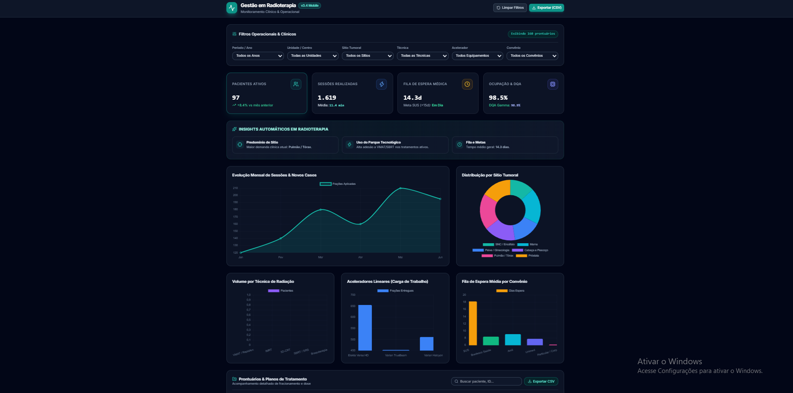
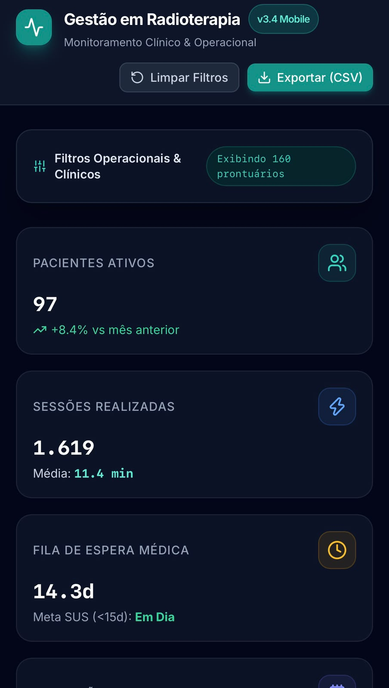

Analista de Dados Júnior
Transformo dados brutos em insights estratégicos para a tomada de decisões. Especializado em análise exploratória, dashboards interativos e tratamento de dados.
Data Analyst • SQL | Power BI | Python
Sou um profissional apaixonado por resolver problemas complexos por meio da Análise de Dados. Tenho facilidade em extrair valor de volumes de dados brutos e transformar números em informações claras e estratégicas para apoiar a tomada de decisões corporativas.
Possuo conhecimentos práticos e sólidos nas principais ferramentas do ecossistema de dados: construção de dashboards e relatórios dinâmicos no Power BI e no Excel, tratamento e estruturação de dados utilizando SQL para consultas eficientes, e manipulação avançada de dados com Python (Pandas, NumPy e bibliotecas de visualização).
Atualmente, estou em busca de uma oportunidade como Analista de Dados Júnior, onde eu possa aplicar meus conhecimentos práticos, continuar evoluindo minhas habilidades técnicas e contribuir diretamente para os resultados e metas da empresa.
Principais tecnologias e ferramentas de trabalho
Fórmulas avançadas, ProcX, Tabelas Dinâmicas, Power Query e automação de relatórios.
Modelagem de dados (Star Schema), linguagem DAX, tratamento no Power Query e relatórios interativos.
Consultas complexas, Joins, Agregações, Subqueries, CTEs e manipulação de tabelas.
Análise exploratória com Pandas e NumPy, além de visualização de dados com Matplotlib/Seaborn.
Soluções analíticas interativas focadas na gestão de saúde, eficiência operacional e suporte à tomada de decisão.

Análise Exploratória e Gestão de Fluxos no Atendimento Clínico
Aplicação interativa direcionada à gestão do setor de radioterapia. O dashboard centraliza métricas de volume, tempos de fila e taxa de utilização dos equipamentos, permitindo uma análise clara da capacidade operacional e identificação de pontos de atenção no fluxo de tratamento dos pacientes.
Interface Otimizada para Experiência e Usabilidade Mobile (UX/UI)
Versão especificamente projetada e adaptada para dispositivos móveis. Complementa a solução desktop oferecendo visualização ágil, navegação fluida em telas reduzidas e rápido acesso aos principais KPIs operacionais para tomada de decisão em qualquer lugar.

Entre em contato para conversarmos sobre oportunidades ou parcerias